Contributing to a GitHub repository using Orion
Here's the basic workflow (step by step details follow):
- First time contributing to a specific repo:
- For each contribution to that repo:
First time contributing to a specific repo:
Fork the GitHub repo
- Fork the repository that you want to contribute to on GitHub.
The fork will be associated with your GitHub ID.
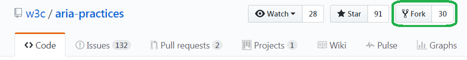
- Copy the URL for the fork (make sure to copy the https url).
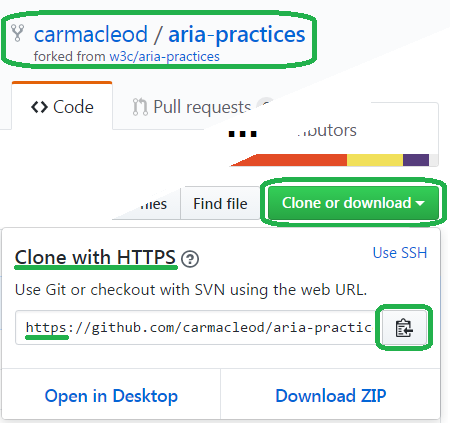
Clone your fork into Orion
- Drop down the
Repository:combo, click theClone Repositorybutton, and paste in the URL for your fork.
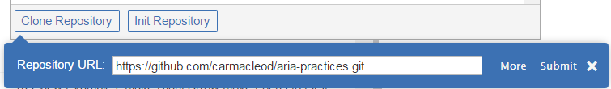
- After the clone completes, it will be added to the
Repository:list.
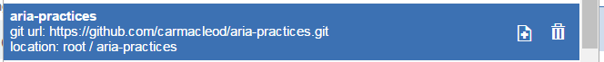
Create the upstream remote
- Use the
Reference:combo to create aNew Remote. The convention is to call it "upstream".
Note: Use the URL for the github repo that you originally forked from.
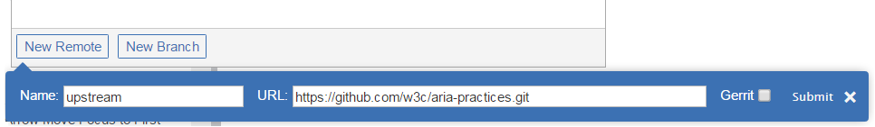
For each contribution to the repo:
- Make sure there's an open Issue for your feature or bug fix on GitHub.
- Go to the Orion Git page. If you are already there, refresh the page (
F5).
Fetch from the upstream remote and merge into your fork
- Select the upstream remote so that you see
master => upstream/masterin theReference:combo. 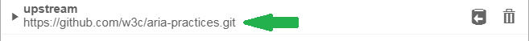
- Use the
Reference:combo or the IncomingFetchbutton to fetch from the upstream remote.
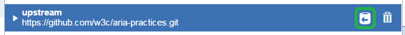
or
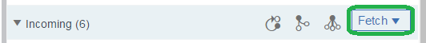
- If there are Incoming changes, click the
Mergebutton to merge them into your local fork (origin/master).
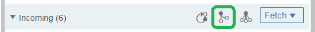
- Expand local and checkout the master branch, so that you see
master => origin/masterin theReference:combo. 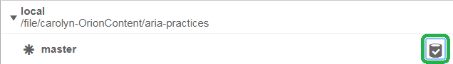
- Click the
Pushbutton to push the Outgoing changes to your fork on GitHub.
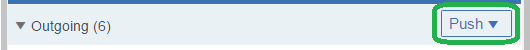
Create a new branch on your fork and check it out
- Select the remote for your local fork so that you see
master => origin/masterin theReference:combo. - Use the
Reference:combo to create aNew Branch. The branch name should beissueX, whereXis the Issue number.
(GitHub requires a branch for each Pull Request).
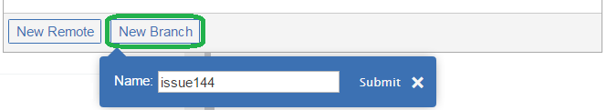
- Find your new branch under
localin theReference:combo, and check it out by clicking theCheckout branchbutton.
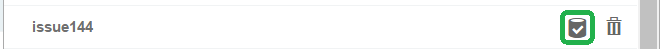
- The
Reference:should now beissueX => something/issueX [New branch].
Make your changes and commit them to the new branch
- Navigate to the
Editorpage. - Make your changes and test them. If applicable, write unit tests.
- When your changes are ready to commit, navigate to, and refresh, the
Gitpage. - The
Reference:should still beissueX => something/issueX [New branch]. - Review the changes and select the file(s) to commit.
- Click on
more ...and selectAdd Change-ID to messageandAdd Signed-off-by to message. - Make sure the
AuthorandCommittername and email are correct.
(You can enter them here, or on theGit Settingspage). - Describe the fix or feature in the commit message. Use
issue #Xto create a link to the issue. - Click
Committo commit your changes to yourissueXbranch.
Push to your fork
Create the Pull Request on GitHub

Clean up your workspace
- Clear the filter in the
Reference:dropdown, and check out themasterbranch underlocal. - The
Reference:should beReference: master => origin/master. - Click
Syncto bring in any incoming changes. - You are now ready to create a new branch to work on a new bug.